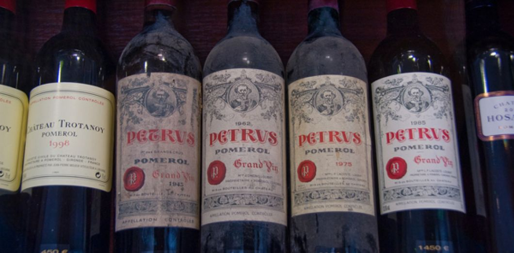
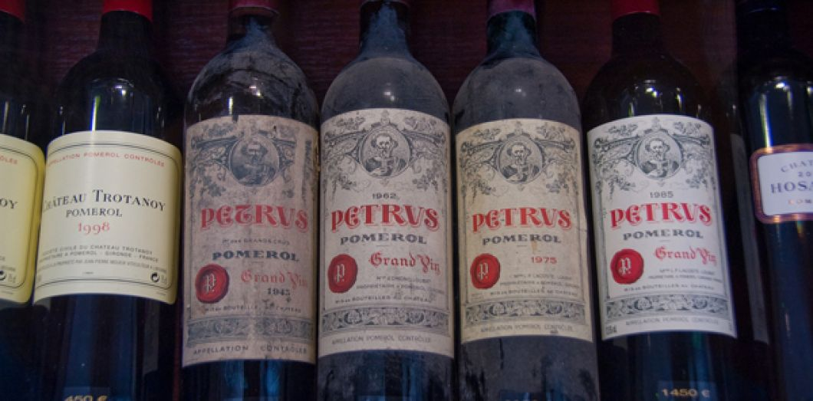

suivant ainsi les changements sociaux et politiques du pays. Le Moyen Âge a vu le développement de somptueux banquets qui ont porté la gastronomie française à un niveau supérieur, avec une nourriture décorée et fortement assaisonnée par des chefs tel Guillaume Tirel. Au XVIIe siècle, les habitudes ont changé, avec une utilisation moins systématique des épices et avec le développement de l'utilisation des herbes aromatiques et de techniques raffinées, initiées par François Pierre de La Varenne et par d'autres dignitaires de Napoléon Bonaparte, comme Marie-Antoine Carême.
La diversité des traditions régionales rend la cuisine française multiple plutôt qu'unifiée. De nombreux plats régionaux se sont développés au point d'être connus et reconnus au niveau national, donnant parfois naissance à des variations d'une région à l'autre.
 
La cuisine française n'a été codifiée qu'au XXe siècle, par Auguste Escoffier, pour devenir la référence moderne en matière de grande cuisine. Elle est aujourd'hui encore considérée comme une référence dans le monde en raison de son aspect culturel. L'œuvre d'Escoffier a toutefois laissé de côté une grande partie du caractère régional que l'on peut trouver dans les provinces françaises. L'essor du tourisme gastronomique, avec l'aide notamment du Guide Michelin, a contribué à un certain retour aux sources des gens vers la campagne au cours du XXe siècle et au-delà.
Les produits agricoles
Comme le fromage, le vin, la viande, etc., occupent une place d'exception dans la cuisine française, de nombreuses productions régionales arborant, lorsqu'elles sont commercialisées, le label de préservation de l'environnement Agriculture Biologique (AB), des marques de certification collectives liées à l'agriculture durable comme Demeter, Bio Cohérence, etc., ou une préservation d'appellation d'origine comme Appellation d'origine protégée (AOP) ou encore une préservation d'indication géographique comme Indication géographique protégée (IGP).
10 faits intéressants sur la Russie |
10 faits intéressants sur le Portugal |